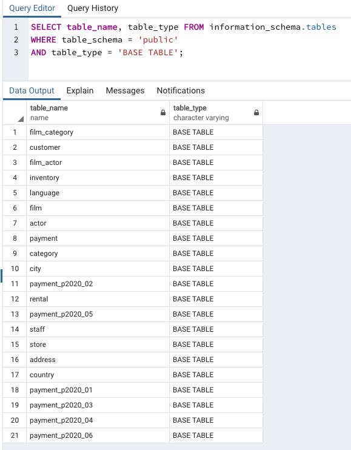
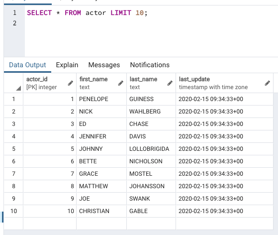
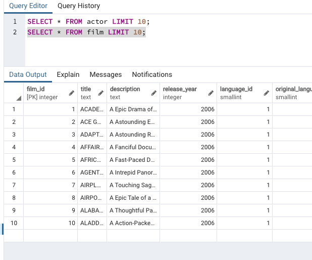
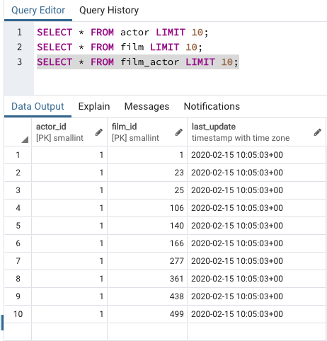
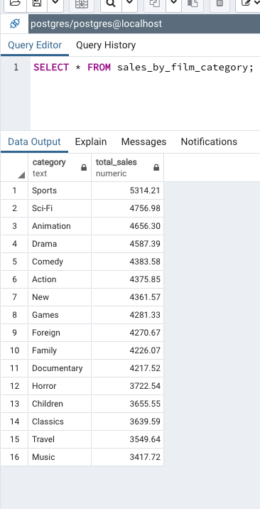
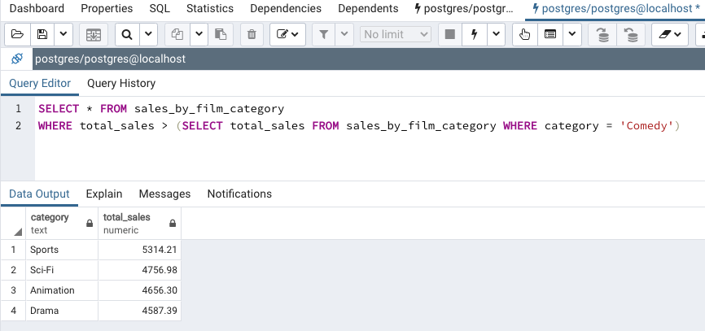

# <div style="text-align:center;font-size: 3em;line-height:3em;"> INFO 610 Fall 2020 </div> <div style="text-align:center;font-size: 1.5em;line-height:1.8em;">Week 11.5, Oct 29, 2020</div> <div style="text-align:center;font-size: 1em;line-height:1.8em;">Sample Data - Subquery</div> <div style="text-align:center;font-size: 1.9em;line-height:3em;">chrisfauerbach.github.io/info610_fall_2020/</div> --- # Pagila dabase Example database, with postgresql version https://github.com/devrimgunduz/pagila ```bash % pwd /Users/cf/Documents/Projects/info610_fall_2020/week11.5/data $ ls -altr total 10632 -rw-r--r--@ 1 lin138 staff 52458 Aug 22 06:25 pagila-schema.sql -rw-r--r--@ 1 lin138 staff 5388598 Aug 22 06:25 pagila-insert-data.sql drwxr-xr-x 5 lin138 staff 160 Oct 29 11:56 .. drwxr-xr-x 4 lin138 staff 128 Oct 29 11:57 . ``` --- # Docker (docker-compose) In the github repository for these slides, there are a few other files. docker-compose.yml and a 'pg' directory with a SQL script in it. ```yaml ✗ cat docker-compose.yml version: '3.7' services: pg: image: postgres ports: - "5432:5432" volumes: - ./pg:/docker-entrypoint-initdb.d/ environment: - "POSTGRES_PASSWORD=mysecretpassword" ``` ```bash ✗ docker-compose up Starting week115_pg_1 ... done Attaching to week115_pg_1 pg_1 | pg_1 | PostgreSQL Database directory appears to contain a database; Skipping initialization pg_1 | pg_1 | 2020-10-29 16:34:46.779 UTC [1] LOG: starting PostgreSQL 13.0 (Debian 13.0-1.pgdg100+1) on x86_64-pc-linux-gnu, compiled by gcc (Debian 8.3.0-6) 8.3.0, 64-bit pg_1 | 2020-10-29 16:34:46.779 UTC [1] LOG: listening on IPv4 address "0.0.0.0", port 5432 pg_1 | 2020-10-29 16:34:46.779 UTC [1] LOG: listening on IPv6 address "::", port 5432 pg_1 | 2020-10-29 16:34:46.781 UTC [1] LOG: listening on Unix socket "/var/run/postgresql/.s.PGSQL.5432" pg_1 | 2020-10-29 16:34:46.784 UTC [26] LOG: database system was shut down at 2020-10-29 16:34:41 UTC pg_1 | 2020-10-29 16:34:46.788 UTC [1] LOG: database system is ready to accept connections ``` --- # Docker Compose Allows us to tie together multiple containers at the same time. Examples , one for database, one for application server, one for web server This provides a capability of internal networking, startup dependencies, etc For this example, we're defining a Docker container with preset configuration. We can now put SQL in a folder (pg) in order to have it automatically run when the Docker container starts --- # Explore some data Pagila is a Postgres close of 'Sakila' an example database from MySQL <a href="https://dev.mysql.com/doc/sakila/en/sakila-introduction.html">Sakila</a> <quote>the Sakila sample database is designed to represent a DVD rental store. The Sakila sample database still borrows film and actor names from the Dell sample database.</quote> --- # Tables  --- # Actor  --- # Film  --- # Film - Actor  --- # View - Sales by Film Category  --- # Comedy++ Comedy is my favorite. What categories outperform comedy? ```sql SELECT total_sales FROM sales_by_film_category; ``` This gives us the total ales of all categories. If we use that as the 'anchor' for our data, how can we find records that have sales great than that? --- # The subquery ```sql SELECT * FROM sales_by_film_category WHERE total_sales > (SELECT total_sales FROM sales_by_film_category WHERE category = 'Comedy') ```  --- # Syntax Concerns ```sql SELECT * FROM sales_by_film_category WHERE total_sales > (SELECT * FROM sales_by_film_category WHERE category = 'Comedy') ERROR: subquery must return only one column LINE 2: WHERE total_sales > (SELECT * FROM sales_by_film_category WH... ^ SQL state: 42601 Character: 59 ``` ```sql SELECT * FROM sales_by_film_category WHERE total_sales > (SELECT CATEGORY FROM sales_by_film_category WHERE category = 'Comedy') ERROR: operator does not exist: numeric > text LINE 2: WHERE total_sales > (SELECT CATEGORY FROM sales_by_film_cate... ^ HINT: No operator matches the given name and argument types. You might need to add explicit type casts. SQL state: 42883 Character: 57 ``` --- --- ---